CS229
Lecture notes
翻译：CycleUser
Part
V
支持向量机（Support Vector Machines）
本章的讲义主要讲述的是 支持向量机( Support Vector Machine ，缩写为 SVM) 学习算法。SVM 算得上是现有的最好的现成的（“off-the-shelf”）监督学习算法之一，很多人实际上认为这里没有“之一”这两个字的必要，认为 SVM 就是最好的现成的监督学习算法。讲这个 SVM 的来龙去脉之前，我们需要先讲一些关于边界的内容，以及对数据进行分割成大的区块（gap）的思路。接下来，我们要讲一下最优边界分类器（optimal margin classifier,），其中还会引入一些关于拉格朗日对偶（Lagrange duality）的内容。然后我们还会接触到核（Kernels），这提供了一种在非常高的维度（例如无穷维度）中进行 SVM 学习的高效率方法，最终本章结尾部分会讲 SMO 算法，也就是 SVM 算法的一个有效实例。
1 边界（Margins）:直觉（Intuition）
咱们这回讲 SVM 学习算法，从边界（margins）开始说起。这一节我们会给出关于边界的一些直观展示（intuitions），以及过对于我们做出的预测的信心（confidence）；在本章的第三节中，会对这些概念进行更正式化的表述。
考虑逻辑回归，其中的概率分布p(y
= 1|x; θ) 是基于 hθ(x) = g(θTx) 而建立的模型。当且仅当 hθ(x) ≥ 0.5 ，也就是 θTx ≥ 0 的时候，我们才会预测出“1”。假如有一个正向（Positive）的训练样本（positive training example）（y = 1）。那么θTx 越大，hθ (x) = p(y = 1|x; w, b) 也就越大，我们对预测 Label 为 1 的“信心（confidence）”也就越强。所以如果 y = 1 且 θT x ≫ 0（远大于 0），那么我们就对这时候进行的预测非常有信心，当然这只是一种很不正式的粗略认识。与之类似，在逻辑回归中，如果有 y = 0 且 θT x ≪ 0（远小于 0），我们也对这时候给出的预测很有信心。所以还是以一种非常不正式的方式来说，对于一个给定的训练集，如果我们能找到一个 θ，满足当 y(i) = 1 的时候总有 θT x(i) ≫ 0，而 y(i) = 0 的时候则 θT x(i) ≪ 0，我们就说这个对训练数据的拟合很好，因为这就能对所有训练样本给出可靠（甚至正确）的分类。似乎这样就是咱们要实现的目标了，稍后我们就要使用函数边界记号（notion of
functional margins）来用正规的语言来表达该思路。
还有另外一种的直观表示，例如下面这个图当中，画叉的点表示的是正向训练样本，而小圆圈的点表示的是负向训练样本，图中还画出了分类边界（decision boundary），这条线也就是通过等式 θT x = 0 来确定的，也叫做分类超平面（separating hyperplane）。图中还标出了三个点 A，B 和 C。

可以发现 A 点距离分界线很远。如果我们对 A 点的 y 值进行预测，估计我们会很有信心地认为在那个位置的 y = 1。与之相反的是 C，这个点距离边界线很近，而且虽然这个 C 点也在预测值 y = 1 的一侧，但看上去距离边界线的距离实在是很近的，所以也很可能会让我们对这个点的预测为 y = 0。因此，我们对 A 点的预测要比对 C 点的预测更有把握得多。B 点正好在上面两种极端情况之间，更广泛地说，如果一个点距离分类超平面（separating
hyperplane）比较远，我们就可以对给出的预测很有信心。那么给定一个训练集，如果我们能够找到一个分类边界，利用这个边界我们可以对所有的训练样本给出正确并且有信心（也就是数据点距离分类边界要都很远）的预测，那这就是我们想要达到的状态了。当然上面这种说法还是很不正规，后面我们会使用几何边界记号（notion of
geometric margins）来更正规地来表达。
2 记号（Notation）
在讨论 SVMs
的时候，出于简化的目的，我们先要引入一个新的记号，用来表示分类。假设我们要针对一个二值化分类的问题建立一个线性分类器，其中用来分类的标签（label）为 y，分类特征（feature）为 x。从此以后我们就用 y ∈ {−1, 1} (而不是之前的 {0, 1}) 来表示这个分类标签了。另外，以后咱们也不再使用向量 θ 来表示咱们这个线性分类器的参数了，而是使用参数 w 和 b，把分类器写成下面这样：

当 z
≥ 0，则 g(z)
= 1；而反之若 z
＜ 0，则g(z) = -1。这里的这个 “w, b” 记号就可以让我们能把截距项（intercept term）b 与其他的参数区别开。（此外我们也不用再像早些时候那样要去设定 x0 = 1 这样的一个额外的输入特征向量了。）所以，这里的这个参数 b 扮演的角色就相当于之前的参数 θ0 ，而参数 w 则相当于 [θ1 . . . θn]T。
还要注意的是，从我们上面对函数 g 的定义，可以发现我们的分类器给出的预测是 1 或者 -1 （参考 感知器算法 perceptron
algorithm），这样也就不需要先通过中间步骤（intermediate step）来估计 y 为 1 的概率（这就是逻辑回归中的步骤）。
3 函数边界和几何边界（Functional and geometric margins）
咱们来用正规语言来将函数边界和几何边界的记号的概念进行正规化。给定一个训练集 (x(i), y(i))，我们用下面的方法来定义对应该训练集的函数边界 (w, b)：
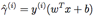
要注意，如果 y(i) = 1，那么为了让函数边界很大（也就是说，我们的预测很可信并且很正确），我们就需要 wT x + b 是一个很大的正数。与此相对，如果 y(i) = −1，那么为了让函数边界很大，我们就需要wT x + b 是一个很大（绝对值）的负数。而且，只要满足 y(i)(wT x + b) > 0，那我们针对这个样本的预测就是正确的。（自己检验证明吧。）因此，一个大的函数边界就表示了一个可信且正确的预测。
对于一个线性分类器，选择上面给定的函数 g （取值范围为{−1, 1}），函数边界的一个性质却使得这个分类器并不具有对置信度的良好量度。例如上面给定的这个函数 g，我们会发现，如果用 2w 替换掉 w，然后用 2b 替换 b，那么由于有 g(wTx + b) = g(2wTx + 2b)，所以这样改变也并不会影响 hw,b(x)。也就是说，函数 g 以及 hw,b(x) 只取决于 wT x + b 的正负符号（sign），而不受其大小（magnitude）的影响。然而，把(w, b) 翻倍成 (2w,2b) 还会导致函数距离也被放大了 2 倍。因此，这样看来就是只要随意去调整 w 和 b 的范围，我们就可以人为调整函数边界到足够大了，而不用去改变任何有实际意义的变量。直观地看，这就导致我们有必要引入某种归一化条件，例如使 ||w||2 = 1；也就是说，我们可以将 (w, b) 替换成 (w/||w||2,b/||w||2)，然后考虑对应 (w/||w||2,b/||w||2) 的函数边界。我们稍后再详细讨论这部分内容。
给定一个训练集 S = {(x(i),y(i)); i = 1, ..., m}，我们将对应 S 的函数边界 (w, b) 定义为每个训练样本的函数边界的最小值。记作 γˆ，可以写成：

接下来，咱们要讲的是几何边界（geometric
margins）。例如下图所示：
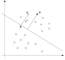
图中给出了对应 (w,
b) 的分类边界，其倾斜方向（即法线方向）为向量 w 的方向。这里的向量 w 是与分类超平面垂直的（orthogonal，即夹角为 90°）。（你需要说服自己现实情况一定是这样的。）假设有图中所示的一个点 A，此点表示的是针对某训练样本的输入特征为 x(i) ，对应的标签（label）为 y(i) = 1。然后这个点到分类边界的距离 γ(i), 就通过 AB 之间的线段能够获得。
怎么找到的 γ(i) 值呢？这样，w/||w|| 是一个单位长度的向量，指向与 w 相同的方向。因为这里 A 点表示的是 x(i)，所以就能找到一个点 B，其位置为 x(i) − γ(i) · w/||w||。这个 B 点正好位于分类边界线上面，而这条线上的所有 x 都满足等式 wT x + b = 0 ，所以有：

通过上面的方程解出来的 γ(i)
为：

这个解是针对图中 A 处于训练样本中正向部分这种情况，这时候位于“正向（positive）”一侧就是很理想的情况。如果更泛化一下，就可以定义对应训练样本 (x(i), y(i)) 的几何边界 (w, b) 为：

这里要注意，如果 ||w||
= 1，那么函数边界（functional margin）就等于几何边界（geometric margin）——我们可以用这种方法来将两个边界记号联系起来。此外，几何边界是不受参数缩放的影响的；也就是说，如果我们把 w 改为 2w，b 改为 2b，那么几何边界并不会改变。稍后这个性质就会派上用场了。特别要注意的是，由于这个与参数缩放的无关性，当试图对某个数据集的 w 和 b 进行拟合的时候，我们就可以倒入一个任意设置的缩放参数来约束 w，而不会改变什么重要项；例如，我们可以设置 ||w|| = 1，或者 |w1| = 5，或者 |w1 +b|+|w2| = 2，等等都可以，这些都只需要对 w 和 b 进行缩放就可以满足了。
最后，给定一个训练集 S = {(x(i), y(i)); i = 1, ..., m}，我们也可以我们将对应 S 的几何边界 (w, b) 定义为每个训练样本的几何边界的最小值：
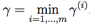
4 最优边界分类器（optimal margin classifier）
给定一个训练集，根据咱们前文的讨论，似乎很自然地第一要务就是要尝试着找出一个分类边界，使（几何）边界能够最大，因为这会反映出对训练集进行的一系列的置信度很高的分类预测，也是对训练数据的一个良好“拟合（fit）”。这样生成的一个分类器，能够把正向和负向的训练样本分隔开，中间有一个“空白区（gap）”，也就是几何边界。
到目前为止，我们都是假定给定的训练集是线性可分（linearly separable）的；也就是说，能够在正向和负向的样本之间用某种分类超平面来进行划分。那要怎样找到能够得到最大几何边界的那一组呢？我们可以提出下面的这样一个优化问题（optimization problem）：
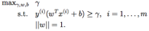
也就是说，我们要让 γ
取最大值，使得每一个训练样本的函数边界都至少为 γ（having functional margin at least γ）。另外 ||w|| = 1 这个约束条件还能保证函数边界与几何边界相等，所以我们就还能够保证所有的几何边界都至少为 γ。因此，对上面这个优化问题进行求解，就能得出对应训练集的最大可能几何边界（largest possible geometric margin）的 (w, b)。
如果解出来上面的优化问题，那就全都搞定了。但 “||w|| = 1” 这个约束条件很讨厌，是非凸的(non-convex)，而且这个优化问题也明显不是那种我们随便扔给某些标准优化软件（standard optimization software）就能解决的。所以我们要把这个问题进行改善，让它更好解。例如：

这时候，我们要让 γˆ/||w||
的取值最大，使得函数边界都至少为 γˆ。由于几何边界和函数边界可以通过 γ = γˆ/||w| 来联系起来，所以这样就能得到我们想要的结果了。而且，这样还能摆脱掉 ||w|| = 1 这个讨厌的约束条件。然而，悲剧的是我们以现在就有了一个很讨厌的（还是非凸的）目标函数 γˆ/||w||；而且，我们还是没有什么现成的软件（off-the-shelf software）能够解出来这样的一个优化问题。
那接着看吧。还记得咱们之前讲过的可以对 w 和 b 设置任意的一个缩放约束参数，而不会改变任何实质性内容。咱们现在就要用到这个重要性质了。下面咱们就来引入一个缩放约束参数，这样针对训练集的函数边界 w, b 的这个参数就可以设置为 1（scaling constraint that the functional margin
of w, b with respect to the training set must be 1）：
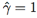
对 w 和 b 使用某些常数来进行翻倍，结果就是函数边界也会以相同的常数进行加倍，这就确实是一个缩放约束了，而且只要对 w 和 b 进行缩放就可以满足。把这个性质用到咱们上面的优化问题中去，同时要注意到当 γˆ/||w|| = 1/||w|| 取得最大值的时候，||w||2 取得最小值，所以就得到了下面的这个优化问题：

通过上面这样的转换，这个问题就变得容易解决了。上面的问题有一个凸二次对象（a convex quadratic objective），且仅受线性约束（only linear constraints）。对这个问题进行求解，我们就能得到最优边界分类器（optimal margin classifier）。这个优化问题的求解可以使用商业二次规划（commercial quadratic programming ，缩写QP）代码。1
1可能你更熟悉的是线性规划（linear programming），这种方法适用的优化问题是有线性对象（linear objectives）和线性约束（linear constraints）。QP 软件的适用范围也很广泛，其中就包括这种凸二次对象（convex quadratic objectives）和线性约束的情况。
这样，差不多就可以说问题已经得到了解决，接下来咱们就要岔开话题，聊一聊拉格朗日对偶性（Lagrange duality）。这样就会引出我们这个优化问题的对偶形式（dual form），这种形式会在我们后续要使用核（kernels）的过程中扮演重要角色，核（kernels）可以有效地对极高维度空间中的数据建立最优边界分类器。通过这种对偶形式，我们还能够推出一种非常有效的算法，来解决上面这个优化问题，而且通常这个算法那还能比通用的 QP 软件更好用。
5 拉格朗日对偶性（Lagrange duality）
咱们先把 SVMs 以及最大化边界分类器都放到一边，先来谈一下约束优化问题的求解。
例如下面这样的一个问题：

可能有的同学还能想起来这个问题可以使用拉格朗日乘数法（method of Lagrange multipliers）来解决。（没见过也不要紧哈。）在这个方法中，我们定义了一个拉格朗日函数（Lagrangian）为：

上面这个等式中，这个 βi 就叫做拉格朗日乘数（Lagrange multipliers）。然后接下来让 对 L 取偏导数，使其为零：

然后就可以解出对应的 w 和 β 了。
在本节，我们对此进行一下泛化，扩展到约束优化（constrained optimization）的问题上，其中同时包含不等约束和等式约束。由于篇幅限制，我们在本课程不能讲清楚全部的拉格朗日对偶性（do the theory of Lagrange duality
justice），但还是会给出主要的思路和一些结论的，这些内容会用到我们稍后的最优边界分类器的优化问题（optimal margin classifier’s optimization problem）。
2 对拉格朗日对偶性该兴趣的读者如果想要了解更多，可以参考阅读 R. T. Rockefeller (1970) 所作的《凸分析》（Convex Analysis），普林斯顿大学出版社（Princeton University Press）。
下面这个，我们称之为主最优化问题（primal optimization problem）：

要解决上面这样的问题，首先要定义一下广义拉格朗日函数（generalized Lagrangian）：

上面的式子中， αi 和 βi 都是拉格朗日乘数（Lagrange
multipliers）。设有下面这样一个量（quantity）：
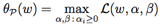
上式中的 “P” 是对 “primal” 的简写。设已经给定了某些 w。如果 w 不能满足某些主要约束，（例如对于某些 i 存在 gi(w) > 0 或者 hi(w) ̸= 0），那么咱们就能够证明存在下面的等式关系：
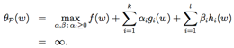
与之相反，如果 w 的某些特定值确实能满足约束条件，那么则有 θP(w) = f(w)。因此总结一下就是：
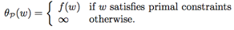
因此，如果 w 的所有值都满足主要约束条件，那么θP的值就等于此优化问题的目标量（objective
in our problem），而如果约束条件不能被满足，那 θP的值就是正无穷了（positive infinity）。所以，进一步就可以引出下面这个最小化问题（minimization problem）：

这个新提出的问题与之前主要约束问题有一样的解，所以还是同一个问题。为了后面的一些内容，我们要在这里定义一个目标量的最优值（optimal value of the objective）p∗ = minw θP (w)；我们把这个值称为 主要优化问题的值（value of the primal problem）。
接下来咱们来看一个稍微不太一样的问题。我们定义下面这个 θD：

上面的式子中，“D” 是 “dual” 的缩写。这里要注意，在对θP 的定义中，之前是对 α, β 进行优化（找最大值），这里则是找 w 的最小值。
现在我们就能给出这个对偶优化问题了：
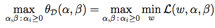
这个形式基本就和我们之前看到过的主要约束问题（primal problem）是一样的了，唯一不同是这里的“max” 和 “min”
互换了位置。我们也可以对这种对偶问题对象的最优值进行定义，即 d∗ = maxα,β : αi≥0 θD(w)。
主要约束问题和这里的对偶性问题是怎么联系起来的呢？通过下面的关系就很容易发现
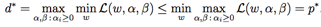
（你可以自己证明一下，这里以及以后的一个函数的最大的最小值“max min”总是小于等于最小的最大值“min max”。）不过在某些特定的情况下，就会有二者相等的情况：
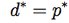
这样就可以解对偶问题来代替原来的主要约束问题了。接下来咱们就来看看导致上面二者相等的特定条件是什么。
假设 f 和 gi 都是凸的convex3，hi 是仿射的（affine）4。进一步设 g 是严格可行的(strictly feasible)；这就意味着会存在某个 w，使得对所有的 i 都有 gi(w) < 0。
3当 f 有一个海森矩阵（Hessian matrix）的时候，那么当且仅当这个海森矩阵（Hessian matrix）是半正定矩阵，f 才是凸的。例如，f (w) = wT w 就是凸的；类似的，所有的线性linear（以及仿射affine）函数也都是凸的。（不可微differentiable的函数 f 也可以是凸的，不过在哪买还不需要在这里对凸性进行那么泛化的扩展定义了。）
4例如，存在 ai和 bi 满足 hi(w) = aTi w + bi。仿射（Affine）的意思大概就跟线性 linear
差不多，不同的就是在矩阵进行了线性变换的基础上还增加了一个截距项（extra intercept term）bi。
基于上面的假设，可知必然存在 w∗，α∗， β∗ 满足w∗ 为主要约束问题（primal problem）的解，而α∗，β∗ 为对偶问题的解，此外存在一个 p∗ = d∗ = L(w∗, α∗, β∗)。另外，w∗，α∗， β∗ 这三个还会满足卡罗需-库恩-塔克条件（Karush-Kuhn-Tucker conditions, 缩写为 KKT），如下所示：

反过来，如果某一组 w∗，α∗， β∗ 满足 KKT 条件，那么这一组值就也是主要约束问题（primal problem）和对偶问题的解。
这里咱们要注意一下等式（5），这个等式也叫做 KKT 对偶互补条件（dual complementarity condition）。这个等式暗示，当αi∗ > 0 的时候，则有 gi(w∗) = 0。（也就是说，gi(w) ≤ 0 这个约束条件存在的话，则应该是相等关系，而不是不等关系。）后面的学习中，这个等式很重要，尤其对于表明 SVM 只有少数的“支持向量（Support Vectors）”；在学习 SMO 算法的时候，还可以用 KKT 对偶互补条件来进行收敛性检测（convergence test）。
6 最优边界分类器（Optimal margin classifiers ）
在前面的内容中，我们讲到了下面这种（主要约束）优化问题（optimization problem），用于寻找最优边界分类器（optimal margin classifier）：
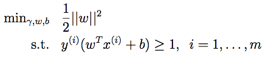
这里的约束条件（constraints）可以写成下面的形式：
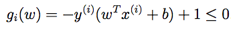
We have one such
constraint for each training example. Note that from the KKT dual complementarity condition, we
will have αi > 0 only for the training
examples that have functional margin exactly equal to one (i.e., the ones corresponding
to constraints that hold with equality, gi(w) =
0). Consider the
figure below, in which a maximum margin separating hyperplane is shown by the solid
line.
对于训练集中的每一个样本，都有这样的一个约束条件。要注意，通过 KKT 对偶互补条件可知，只有训练样本的函数边界确定为 1 的情况下，才有 αi > 0
（这些样本对应的约束条件关系都是等式关系，也就是对应的 gi(w) = 0）。如下图所示，其中用实线所表示的就是最大间隔分界超平面（maximum margin separating hyperplane）。

具有最小边界的样本点（points
with the smallest margins）正好就是距离分类边界（decision boundary;）最近的那些点；图中所示，一共有三个这样的点，一个是空心圆的负值，两个是叉号的正值，他们所处的位置有虚线与分类边界线（即实线）相平行。因此，在这个优化问题中的最优解里面，只有这三个样本点所对应的 αi 是非零的。这种现象就是，支持向量的规模（number of support vectors）可以比整个训练集的规模（size of the training set）更小，这在稍后的内容中会用到。
Let’s move on.
Looking ahead, as we develop the dual form of the problem, one key idea to
watch out for is that we’ll try to write our algorithm in terms of only the
inner product ⟨x(i),x(j)⟩ (think of this as (x(i))Tx(j)) between points in the input
feature space. The fact that we can express our algorithm in terms of
these inner products will be key when we apply the kernel trick.
接着往下来。我们已经给出了问题的对偶形式，那么一个关键的思路就是，接下来我们需要把算法写成仅包含内积的形式（⟨x(i),x(j)⟩ ，也可以理解为 (x(i))Tx(j)），即输入特征空间中的点相乘得到的内积。当使用核技巧（kernel trick）的时候，把算法用内积的形式表达就非常重要了。
在构建优化问题的拉格朗日函数（Lagrangian）的时候，有下面的等式：

注意这里的拉格朗日乘数（Lagrange
multipliers）中只有“αi” 而没有 “βi”，因为这时候问题还只有不等式约束条件（inequality constraints）。
接下来咱们找一下这个问题的对偶性是。首先就要使 L(w,b,α) 取最小值，调整 w 和 b，而使 α 固定，这样就能得到 θD，具体方法也就是令 L 关于 w 和 b 的导数（derivatives）为零。接下来得到下面的等式：
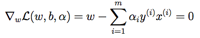
改写一下形式也就得到了：
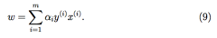
关于 b
的导数为零，就有：

通过上面的等式 (9)取得 w 的一种定义方式，然后把这个代入到拉格朗日函数，也就是等式(8) 中，然后简化一下，就得到：

然后根据上面的等式 (10) 就能知道最后一项必然是 0，所以可以进一步简化得到：
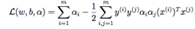
还记得之前我们得到的关于 w 和 b 来取 L 最小值的等式吧。把这些与约束条件 αi ≥ 0 （这个一直都成立的）结合起来，然后再结合等式 (10)，就得到了下面的对偶优化问题了：

You should also be
able to verify that the conditions required for p∗ = d∗ and the KKT conditions (Equations 3–7) to
hold are indeed satisfied in our optimization problem. Hence, we can solve the
dual in lieu of solving the primal problem. Specifically, in the dual problem
above, we have a maximization problem in which the parameters are the αi’s. We’ll talk
later about the specific algorithm that we’re going to use to solve the dual
problem, but if we are indeed able to solve it (i.e., find the α’s that
maximize W(α) subject to the constraints), then we can use Equation (9) to go
back and find the optimal w’s as a function of the α’s. Having found w∗, by considering the primal problem, it is also straightforward to find
the optimal value for the intercept term b as
你应该能够证明我们这个优化问题的条件是满足 p∗ = d∗ 和 KKT 条件的（等式 (3-7)）。这样，我们就可以通过解这个对偶问题来解决掉原来的主优化问题。具体来说，就是我们构建了一个以 αi 作为参数的取最大值问题（maximization problem），如果能把这个问题解出来（也就是说找到 α ，使得 W(α) 取最大值，且满足约束条件）那么就可以利用等式 (9) 来返回到问题中，找到最优的 w，作为一个关于 α 的函数。得到了 w∗ 之后，再考虑主优化问题，就能直接找到截距项 b 的最优值了：
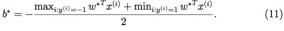
（自己证明一下这个过程吧。）在继续之前，咱们再回头看一看等式 (9)，其中以 α （最优值的）形式来表达了 w 的最优值。加入咱们已经使用一个训练集对模型的参数进行了拟合，然后接下来要对一个新输入的 x 的目标值进行预测。就要对 wT x + b 进行计算，如果得到的值大于 0，就预测 y = 1。通过利用等式 (9)，这个性质也可以写成：

这样的话，要进行一个预测，如果已经找到了 αi，那就必须要计算一个值，该值只依赖新的输入特征 x 与训练集中各个 点 的内积。另外，之前我们就已经发现所有支持向量（support vectors）的 αi 的值都是 0。这样上面的求和项目中的很多项就都是 0 了，接下来咱们就只需要找到 x 与支持向量（support vectors）的内积（这样实际用于计算的只有一小部分，而不是整个的训练集），然后就可以计算等式 (13)，得到结果，就可以用于预测了。
通过检验优化问题的对偶形式，我们对要解决的问题的结构有了深入的了解，并且还根据输入特征向量之间的内积来编写整个算法。 在下一节中，我们将充分利用这些内容，然后对我们的分类问题使用核（kernels）方法。 最终得到的算法，月就是支持向量机（support vector machines）算法，将能够在非常高的维度空间中有效地学习。
7 核（Kernels ）
咱们之前讲线性回归的时候，遇到过这样一个问题，其中输入的特征 x 是一个房屋的居住面积，然后我们考虑使用特征 x，x2 以及 x3 来进行拟合得到一个立方函数（cubic
function）。要区分出两组数据集，我们把“原始”的输入值称为一个问题的输入属性（input attributes），例如住房面积 x。当这些值映射到另外的一些数据集来传递给学习算法的时候，这些新的数据值就称为输入特征（input features）。（很无奈，不同的作者经常用不同的名词来描述这两者，不过在咱们这个讲义里面，我们会争取保持所用术语的一致性。）然后我们还要用 φ 来表示特征映射（feature mapping），这种特征映射也就是从输入的属性（input attributes）到传递给学习算法的输入特征（input features）之间的映射关系。例如，还说刚刚这个居住面积 x 的例子，这里面的特征映射就可以表述为：

现在我们就不再简单直接地利用 SVM（支持向量机算法）来处理原始的输入属性 x 了，而是可以尝试着利用映射产生的新的特征 φ(x)。那么，我们只需要简单回顾一下之前的算法，然后把所有的 x 替换成 φ(x)。
由于上面的算法可以整个用 ⟨x,z⟩ 的内积形式写出，这就意味着我们只需要把上面的所有内积都替换成 ⟨φ(x),φ(z)⟩ 的内积。更简洁地说，给定一个特征映射 φ，那么就可以定义一个对应的核（Kernel），如下所示：

然后，只需要把上面的算法里用到的 ⟨x, z⟩ 全部替换成 K(x, z)，这样就可以了，我们的算法就开始使用特征映射 φ 来进行机器学习了。
现在，给定一个特征映射 φ，很容易就可以找出 φ(x) 和 φ(z)，然后取一下内积，就能计算 K (x, z)了。不过还不仅如此，更有意思的是，通常情况下对这个K (x, z) 的计算往往都会非常容易（very inexpensive），甚至即便 φ(x) 本身很不好算的时候（可能是由于向量维度极高）也如此。在这样的背景下，给定一个特征映射 φ，我们就可以使用 SVM（支持向量机算法）来对高纬度特征空间进行机器学习，而可能根本不用麻烦地区解出来对应的向量 φ(x)。
接下来就看一个例子吧。假设有 x,
z ∈ Rn，设有：
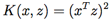
这个也可以写成下面的形式：

因此，可见 K
(x, z) = φ(x)T φ(z)，其中特征映射 φ 给出如下所示(这个例子中的 n = 3) ：

到这里就会发现，计算高维度的 φ(x)
需要的计算量是 O (n2) 级别的，而计算 K (x, z) 则只需要 O (n) 级的时间，也就是与输入属性的维度呈线性相关关系。
与之相关的核（Kernel）可以设为：

（自己检验。）对应的特征映射为（此处依然以 n = 3 为例）：

其中 参数 c 控制了第一组 xi 和第二组 xixj 的相对权重（relative weighting）。
在此基础上进一步扩展，核（Kernel）K (x, z) = (xT z + c)d，就对应了一个 维度的特征空间的特征映射，对应所有从 xi1xi2 ...xik 一直到 d 这种形式的所有多项式（monomials）。然而，即便是针对这种 O(nd) 维度的高维度空间，计算 K (x, z) 让然只需要 O (n) 级的时间。所以我们就不需要在这个非常高的维度特征空间中对特征向量进行具体的表示。
维度的特征空间的特征映射，对应所有从 xi1xi2 ...xik 一直到 d 这种形式的所有多项式（monomials）。然而，即便是针对这种 O(nd) 维度的高维度空间，计算 K (x, z) 让然只需要 O (n) 级的时间。所以我们就不需要在这个非常高的维度特征空间中对特征向量进行具体的表示。
现在，咱们来从另外一个角度来看一下核（Kernel）。凭直觉来看（这种直觉可能还有些错误，不过不要紧，先不用管），如果 φ(x) 和 φ(z) 非常接近（close together），那么就可能会认为 K (x, z) = φ(x)Tφ(z) 就可能会很大。与之相反，如果 φ(x) 和 φ(z) 距离很远，比如近似正交（nearly orthogonal），那么K (x, z) = φ(x)Tφ(z) 就可能会很小。这样，我们就可以把核 K (x, z) 理解成对φ(x) 和 φ(z) 的近似程度的一种度量手段，或者也可以说是对 x 和 z 的近似程度的一种度量手段。
有了这种直观认识之后，假如你正在尝试某些学习算法，并且已经建立了某个函数 K (x, z)，然后你想着也许可以用这个函数来对 x 和 z 的近似程度进行衡量。例如，假如你就选择了下面这个函数：

这个函数是对 x 和 z 的近似程度的一个很好的衡量，二者相近的时候函数值接近 1，而二者远离的时候函数值接近 0。那咱们能不能用这样定义的一个函数 K 来作为一个 SVM（支持向量计算法）里面的核（Kernel）呢？在这个特定的样例里面，答案是可以的。（这个核（Kernel）也叫做 高斯核，对应的是一个无穷维度的特征映射 φ。）那么接下来进一步推广一下，给定某个函数 K，我们该怎样能够确定这个函数是不是一个有效的核（valid kernel）呢？例如，我们能否说如果存在着某一个特征映射 φ，则对于所有的 x 和 z 都有 K (x, z) = φ(x)T φ(z)？
现在暂时假设 K 就是一个有效的核，对应着某种特征映射 φ。然后，考虑某个有 m 个点的有限集合 {x(1),...,x(m)}（这个集合并不一定就必须是训练集），然后设一个方形的 m×m 矩阵 K，定义方式为矩阵的第 (i, j) 个值 Kij = K (x(i) , x(j ) )。这个矩阵就叫做核矩阵（Kernel matrix）。注意到没有，这里对符号 K 进行了重复使用，既指代了K(x,z) 这个核函数（kernel function），也指代了核矩阵 K，这是由于这两者有非常明显的密切关系。
如果 K 是一个有效的核（Kernel），那么就有Kij = K (x(i), x(j)) = φ(x(i))T φ(x(j)) = φ(x(j))T φ(x(i)) = K(x(j), x(i)) = Kji，这就说明 K 是一个对称矩阵。此外，设 φk(x) 表示向量 φ(x) 的第 k 个坐标值（k-th coordinate），挥发性对于任意的向量 z，都有：
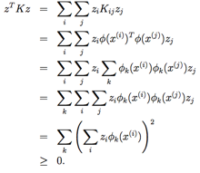
上面的推到中从第二步到最后一步都用到了习题集1第一题（Problem set 1 Q1）中的同样技巧。，由于 z 是任意的，这就表明了矩阵 K 是正半定（positive semi-definite）的矩阵（K ≥ 0）。
这样，我们就证明了，如果 K 是一个有效核函数（例如，假设该函数对应某种特征映射 φ ），那么对应的核矩阵（Kernel Matrix）K ∈ Rm×m 就是一个对称正半定矩阵（symmetric positive semidefinite）。进一步扩展，这就不仅仅是一个 K 是一个有效核函数的必要条件（necessary），还成了充分条件（sufficient），这个核函数也叫做默瑟核（Mercer kernel）。下面要展示的结果都是源自于 Mercer（due to Mercer）。
5很多教材对默瑟定理（Mercer’s theorem）的描述都要更加复杂一些，里面牵涉到了 L2 函数，但如果输入属性（input attributes）只在实数域 Rn 中取值，那么这里给出的这种表述也是等价的（equivalent.）。
默瑟定理（Mercer’s theorem）：设给定的 K: Rn × Rn → R。然后要使 K 为一个有效的默瑟核（valid Mercer kernel），其充分必要条件为：对任意的 {x(1),...,x(m)}, (m < ∞)，都有对应的核矩阵（kernel matrix）为对称半正定矩阵（symmetric positive semi-definite）。
对于一个给定的函数 K，除了之前的找出对应的特征映射 φ 之外，上面的定理还给出了另外一种方法来验证这个函数是否为有效核函数（valid kernel）。在习题集2（problem set 2） 里面有很多联系，大家可以尝试一下。
在课程中，我们也简要讲了核（Kernel）的若干样例。例如，手写数字识别问题当中，给定了一个手写数字(0-9)的图像(16x16 像素)，目的是要认出写的是哪个数字。选用的要么是简单的多项式核（polynomial kernel） K (x, z) = (xT z)d 或者 高斯核（Gaussian kernel），SVM（支持向量机算法）在这个样例中表现出了非常出色的性能。这个结果挺让人吃惊的，因为输入属性 x 是一个 256 维的向量，也就是待识别图像的像素密度值向量，而系统之前并没有对于视觉判断的预备知识，甚至对像素彼此间是否相邻都不了解。课堂上的另一个案例中，用于分类的目标 x 是字符串，例如x 可以使一系列的氨基酸（amino acids），然后连接在一起形成了蛋白质（protein）；要构建一个适用于大多数机器学习算法的合理又足够“小规模”的特征集，是很困难的，而字符串的长度还各自不同，这就更增加了难度。然而也有解决方案，设 φ(x) 为一个特征向量，计算了 x 当中每一个 k 长度的字符串的出现次数（number of occurrences of each length-k
substring in x）。如果考虑英语字母组成给的字符串，那么这样就存在 26k 个这样的字符。这样的话，φ(x) 就是一个 26k 维的向量；这时候，即便 k 的值并不算太大，这个值也会变得特别大，难以有效计算。（例如 264 ≈ 460000。）不过，如果使用（动态编程风格，dynamic programming-ish）的字符串匹配算法，就可以有效率地计算 K(x,z ) = φ(x)Tφ(z)，也就是说，我们就能够对 26k 维的特征空间进行隐式处理，而根本不用去特地计算这个空间中的特征向量。
关于在支持向量机算法（support
vector machines）中核（kernels）的使用，我们讲得已经够清楚了，所以就不在这里多做赘述了。不过有一个思路还是值得记住的，就是核（Kernel）的用法远远不仅限于 SVM 算法当中。具体来说，只要你的学习算法，能够写成仅用输入属性向量的内积来表达的形式，那么就可以通过引入 核K（Kernel），替换成 K(x,z)，来对你的算法“强力”加速，使之能够在与 K 对应的高维度特征空间中有效率地运行。核（Kernel）与感知器（Perceptron）相结合，还可以产生内核感知器算法（kernel perceptron algorithm）。后文我们要学到的很多算法，也都可以适用于这样的处理，这个方法也就成为“核技巧（kernel trick）”
8 正则化和不可区分的情况（Regularization and the non-separable case）
到目前为止，咱们对 SVM（支持向量机算法）进行的推导，都是基于一个假设，也就是所有的数据都是线性可分的。在通过特征映射 φ 来将数据映射到高维度特征空间的过程，通常会增加数据可分割的概率，但我们还是不能保证数据一直可以区分。而且，在某些案例中，查找一个分类超平面还不一定是我们的目的所在，因为也可能很容易就出现异常值。例如，如下图所示的是一个最优边界分类器（optimal margin classifier），如果有一个单独的异常值投到了右上方的区域（如右图所示），这就会导致分界线出现显著的偏移，还会导致分类器的边界缩小了很多。
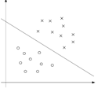 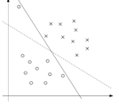
要想让算法能够适用于非线性可分的数据集，并且使其对待异常值的敏感度降低一些，那就要把咱们的优化方法进行重构（reformulate）（使用 l1 正则化），如下所示：

这样就允许数据集里面有（函数）边界小于1 的情况了，然后如果一个样本的函数边界为 1
− ξi (其中 ξ
> 0)，这就需要我们给出 Cξi 作为目标函数降低的成本（cost of the objective function being
increased）。C 是一个参数，用于控制相对权重，具体的控制需要在一对目标之间进行考量，一个是使得 ||w||2 取最小值（前面章节中的案例可以看到这样能够让边界最大化），另一个是确保绝大部分的样本都有至少为 1 的函数边界。
然后按照惯例，给出拉格朗日函数（Lagrangian）：
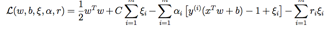
上面的式子中的 αi 和 ri 都是拉格朗日乘数（Lagrange multipliers 被限制为非负数，≥ 0）。这次我们就不再对对偶形式进行详细推导了，不过如往常一样设 关于 w 和 b 的导数为零，然后再代回去进行简化，这样就能够得到下面的该问题的对偶形式：
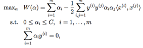
跟以前一样，我们还是可以把 w 用 αi 来进行表述，如同等式 (9)
所示，所以解完了对偶问题之后，我们就可以接下来使用等式 (13) 来给出我们的预测。这里要注意，有一点很神奇，就是在加入了 l1 正则化之后，对对偶问题的唯一改变只是约束从原来的 0 ≤ αi 现在变成了 0 ≤ αi ≤ C。这里对 b∗ 的计算也受到了影响而有所变动（等式 11 不再成立了（no longer valid））；具体内容参考下一节，或者阅读 Platt 的可以不问，
另外，KKT 对偶互补条件（dual complementarity condition，这个在下一节要用来测试 SMO 算法的收敛性）为：

现在，剩下的问题就只是给出一个算法来具体地解这个对偶问题了，我们下一节就来讲这个问题。
9 SMO 优化算法
SMO 优化算法是对 sequential minimal
optimization（意为序列最小化优化）的缩写，此算法于 1998 年由 John Platt 在微软研究院提出，对于从 SVM（支持向量机算法）推导出的对偶问题，这一算法提供了一种有效的解法。然后我们要先讲一下坐标上升算法（coordinate ascent algorithm），这个算法很有趣，而且也是用来推导出 SMO 优化算法的一步。
9.1 坐标上升算法（Coordinate ascent ）
假如要解决下面这样的无约束优化问题：

这里的 W 就是关于参数 αi 的某种函数，此处暂时忽略掉这个问题和支持向量机算法（SVM）的任何关系。更早之前咱们就已经学过了两种优化算法了，梯度下降法和牛顿法。下面这个新的优化算法，就叫做坐标上升算法（coordinate ascent）：
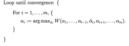
所以如上式中所示，算法最内层的循环（innermost loop）中，会对除了某些特定的 αi 之外的所有变量进行保存，然后重新优化 W 来调整参数 αi。这里给出的这个版本的算法那，最内层循环对变量重新优化的顺序是按照变量排列次序 α1, α2, . . ., αm, α1, α2, . . .. 进行的， 更复杂的版本可能还会选择其他的排列熟悉怒；例如，我们可以根据预测哪个变量可以使 W(α) 增加最多，来选择下一个更新的变量（we may choose the next variable to
update according to which one we expect to allow us to make the largest
increase in W(α)）。
如果在函数 W 中，最内层循环中的 “arg
max” 可以很有效地运行，那么坐标上升算法（coordinate ascent）就成了一个相当有效率的算法了。下面是一个坐标上升算法的示意图：
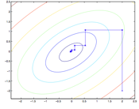
上图中的椭圆形就是我们要优化的二次函数的轮廓线。坐标上升算法的初始值设置为 (2, −2)，此外图中还标示了到全局最大值的路径。要注意，坐标上升法的每一步中，移动的方向都是平行于某个坐标轴的（parallel to one of the axes），因为每次都只对一个变量进行了优化。
9.2 SMO 优化算法
接下来，我们来简单推导一下 SMO
算法，作为 SVM（支持向量机算法）相关讨论的收尾。一些具体的细节就省略掉了，放到作业里面了，其他的一些内容可以参考课堂上发的纸质材料。
下面就是一个（对偶）优化问题：

我们假设有一系列满足约束条件
(18-19) 的 αi 构成的集合。接下来，假设我们要保存固定的 α2, ..., αm 的值，然后进行一步坐标上升，重新优化对应 α1 的目标值（re-optimize the
objective with respect to α1）。这样能解出来么？很不幸，不能，因为约束条件 (19) 就意味着：

或者，也可以对等号两侧同时乘以 y(1) ，然后会得到下面的等式，与上面的等式是等价的：

（这一步用到了一个定理，即 y(1) ∈ {−1, 1}，所以(y(1))2 = 1.。）可见 α1 是由其他的 αi 决定的，这样如果我们保存固定的 α2, ..., αm 的值，那就根本没办法对 α1 的值进行任何修改了，否则不能满足优化问题中的约束条件 (19) 了。
所以，如果我们要对 αi 当中的一些值进行更新的话，就必须至少同时更新两个，这样才能保证满足约束条件。基于这个情况就衍生出了 SMO 算法，简单来说内容如下所示：

重复直到收敛 {
1.
选择某一对的 αi 和 αj 以在下次迭代中进行更新 （这里需要选择那种能朝全局最大值方向最大程度靠近的一对值，using a heuristic that tries to pick
the two that will allow us to make the biggest progress towards the global
maximum）。
2.
使用对应的 αi 和 αj 来重新优化（Re-optimize） W(α) ，而保持其他的 αk 值固定。
}
我们可以检查在某些收敛公差参数 tol 范围内，KKT 对偶互补条件能否被满足，以此来检验这个算法的收敛性。这里的 tol 是收敛公差参数（convergence tolerance parameter），通常都是设定到大概 0.01 到 0.001。（更多细节内容参考文献以及伪代码。）
SMO 算法有效的一个关键原因是对 αi, αj 的更新计算起来很有效率。接下来咱们简要介绍一下推导高效率更新的大概思路。
假设我们现在有某些 αi 满足约束条件 (18-19)，如果我们决定要保存固定的 α3, ..., αm 值，然后要使用这组 α1 和 α2 来重新优化 W
(α1, α2, ..., αm) ，这样成对更新也是为了满足约束条件。根据约束条件 (19)，可以得到：
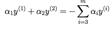
等号右边的值是固定的，因为我们已经固定了α3, ..., αm 的值，所以就可以把等号右边的项目简写成一个常数 ζ:

然后我们就可以用下面的图来表述对 α1 和 α2 的约束条件：

根据约束条件(18)，可知 必须在图中 α1 和 α2 必须在 [0, C] × [0, C] 所构成的方框中。另外图中还有一条线 α1y(1) +α2y(2) = ζ，而我们知道α1 和 α2 必须在这条线上。还需要注意的是，通过上面的约束条件，还能知道 L ≤ α2 ≤ H；否则 (α1,α2) 就不能同时满足在方框内并位于直线上这两个约束条件。在上面这个例子中，L = 0。但考虑到直线 α1y(1) + α2y(2) = ζ 的形状方向，这个 L = 0 还未必就是最佳的；不过通常来讲，保证α1, α2 位于 [0, C] × [0, C] 方框内的 α2 可能的值，都会有一个下界 L 和一个上界 H。
利用等式(20)，我们还可以把 α1 写成 α2 的函数的形式：
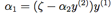
（自己检查一下这个推导过程吧；这里还是用到了定理：y(1) ∈ {−1, 1} ，所以 (y(1))2 = 1。）所以目标函数 W(α) 就可以写成：
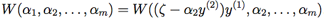
把 α3, ..., αm 当做常量，你就能证明上面这个函数其实只是一个关于 α2 的二次函数。也就是说，其实也可以写成 aα2 + bα2 + c 的形式，其中的 a, b, c 参数。如果我们暂时忽略掉方框约束条件(18)（也就是说 L ≤ α2 ≤ H），那就很容易通过使导数为零来找出此二次函数的最大值，继而进行求解。我们设 α2new, unclipped 表示为 α
的结果值。你需要自己证明，如果我们要使关于 α2 的函数 W取最大值，而又受到方框约束条件的限制，那么就可以把 α2new, unclipped 的值“粘贴”到[L, H] 这个间隔内（taking α2new, unclipped and
“clipping” it to lie in the [L, H] interval），这样来找到最优值结果，就得到了：

最终，找到了 α2new 之后，就可以利用等式(20)来代回这个结果，就能得到 α1new 的最优值。
此外还有一些其他的细节，也都挺简单，不过这里就不讲了，你自己去读一下 Platt 的论文吧：一个是用于对后续用于更新的 αi, αj 启发式选择; 另一个是如何在 SMO算法 运行的同时来对 b 进行更新。